# On écarte les personnes qui déclarent plus de 10h de télévision par jour,
# puis on calcule la moyenne sur l'ensemble des enquêtés.
d |> mutate(heures.tv = if_else(heures.tv > 10, NA_real_, heures.tv))
d |> summarise(
effectif = n(),
tv_moyenne_tous = mean(heures.tv, na.rm = TRUE)
)Représenter des données
L3 économie-finance
Reprise de la séance 3
Le code tourne, le résultat est faux
Ce script s’exécute sans erreur et sans avertissement. Pourtant le commentaire qui l’accompagne est faux.
Trouvez ce qui ne va pas, corrigez, et expliquez en français ce qui s’est passé.
15 minutes de recherche en binômes, puis correction collective au tableau. Le mutate n’est pas assigné : le recodage des valeurs extrêmes ne sert à rien, et l’effectif de 2000 masque le na.rm = TRUE qui écarte déjà 5 non-répondants.
Correction
d_corrige <- d |> mutate(heures.tv = if_else(heures.tv > 10, NA_real_, heures.tv))
d_corrige |> summarise(
effectif = sum(!is.na(heures.tv)),
tv_moyenne = mean(heures.tv, na.rm = TRUE)
)# A tibble: 1 × 2
effectif tv_moyenne
<int> <dbl>
1 1991 2.23
Important
Deux erreurs superposées : le mutate() sans <- ne modifiait rien, donc le recodage annoncé n’avait jamais lieu ; et l’effectif affiché (n()) comptait tout le tableau au lieu des seuls répondants, cachant le na.rm = TRUE.
Pourquoi un graphique
Ce qu’un tableau ne dit pas
La séance dernière, nous avons résumé l’âge des enquêtés :
d |> summarise(
moyenne = mean(age),
ecart_type = sd(age),
mediane = median(age)
)# A tibble: 1 × 3
moyenne ecart_type mediane
<dbl> <dbl> <dbl>
1 48.2 16.9 48Trois nombres. Mais quelle est la forme de cette distribution ? Y a-t-il un seul groupe d’âge, ou plusieurs ? Des valeurs aberrantes ?
La même variable, en image
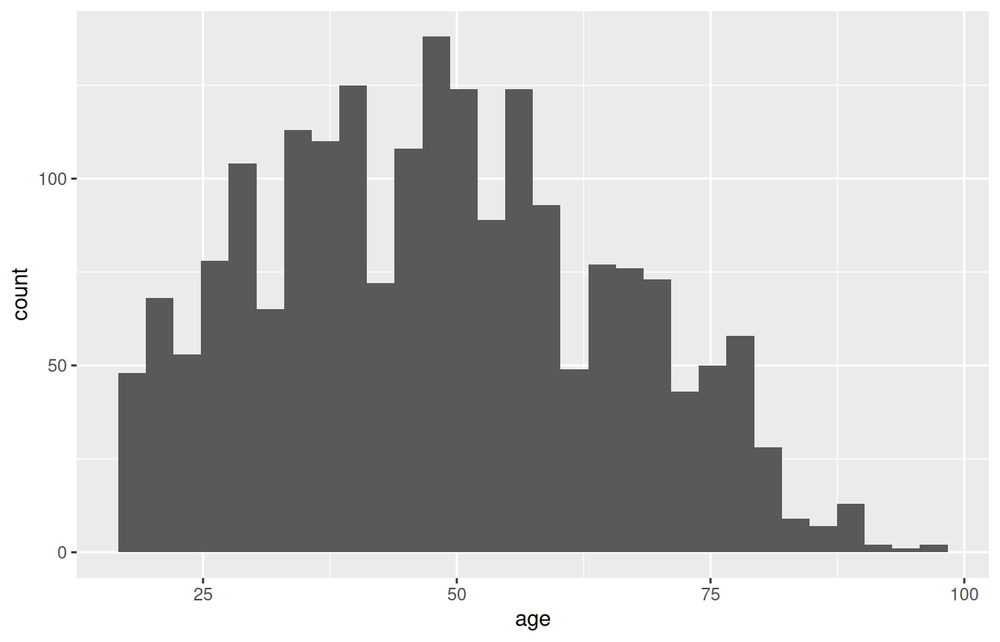
Deux indicateurs identiques peuvent correspondre à des distributions très différentes. C’est ce que nous allons apprendre à voir.
ggplot2
ggplot2 permet de construire des graphiques avec une syntaxe cohérente et puissante. Elle demande l’apprentissage d’un petit langage supplémentaire, mais permet ensuite de construire des graphiques complexes efficacement.
Une de ses particularités : les données d’un graphique sont toujours dans un tableau de données.
library(tidyverse) # ggplot2 est inclus
library(questionr)
data(hdv2003)
d <- as_tibble(hdv2003)Ce chapitre est élaboré à partir du chapitre 8 de Barnier et Kauffmann (2023).
Les trois ingrédients
Initialisation : quelles données ?
Un graphique s’initialise avec la fonction ggplot(). On lui passe le tableau de données.
ggplot(d)Rien ne s’affiche : nous n’avons pas encore dit quoi représenter, ni comment.
Géométrie : comment ?
Il faut ajouter un élément de représentation graphique, appelé géométrie (geom). On l’ajoute avec l’opérateur +.
ggplot(d) + geom_histogram()Cela ne fonctionne pas encore : il manque la variable à représenter.
Esthétique : quelle variable ?
On indique la variable à représenter avec la fonction aes(). Ici, le paramètre x désigne la variable portée par l’axe horizontal.
ggplot(d) + geom_histogram(aes(x = age))`stat_bin()` using `bins = 30`. Pick better value `binwidth`.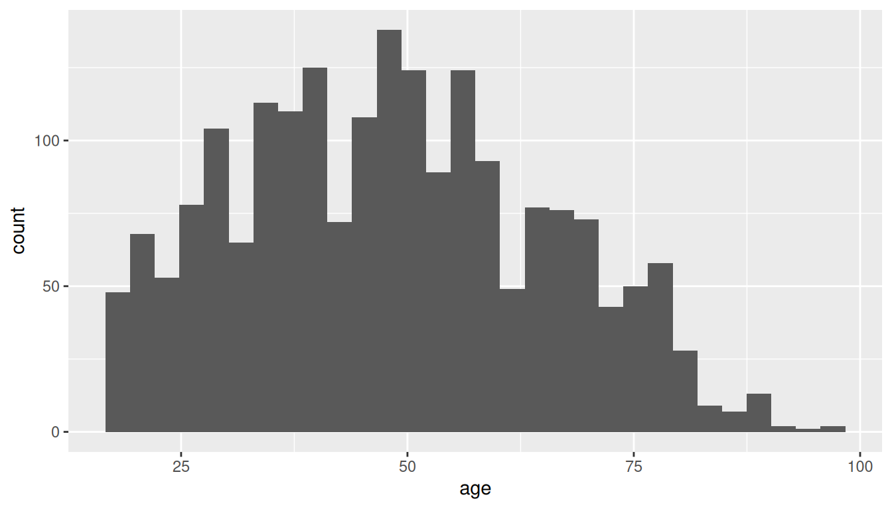
Changer de variable
Il suffit de changer la valeur de x :
ggplot(d) + geom_histogram(aes(x = heures.tv))`stat_bin()` using `bins = 30`. Pick better value `binwidth`.Warning: Removed 5 rows containing non-finite outside the scale range
(`stat_bin()`).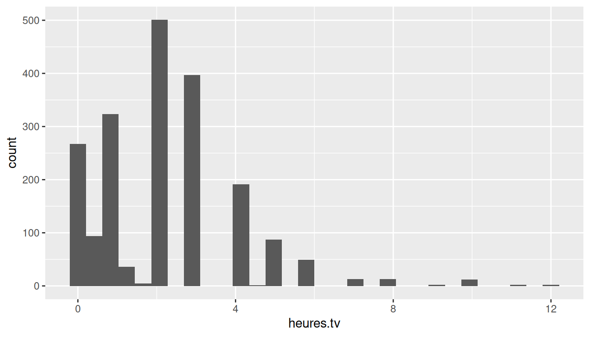
Note
R affiche un avertissement signalant les valeurs manquantes écartées. Un avertissement n’est pas une erreur : le graphique est produit. Mais lisez-le – il vous dit combien d’observations ne sont pas représentées.
En résumé
Pour faire un graphique, il faut trois choses :
- Des données : l’argument de
ggplot() - Un type de représentation :
geom_xxxx - Une ou des variables : l’argument
aes()
On lie les éléments avec l’opérateur +.
Représenter une variable
Une variable quantitative : l’histogramme
L’histogramme découpe la variable en intervalles et compte les observations dans chacun. On contrôle le découpage avec bins :
ggplot(d) +
geom_histogram(aes(x = age), bins = 10)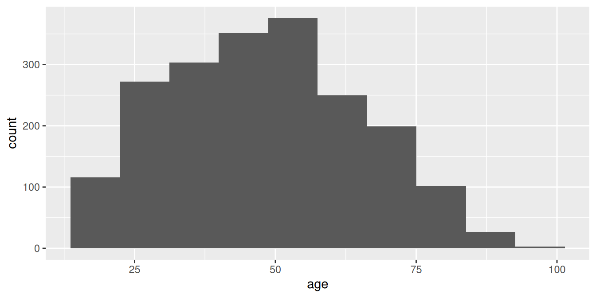
ggplot(d) +
geom_histogram(aes(x = age), bins = 50)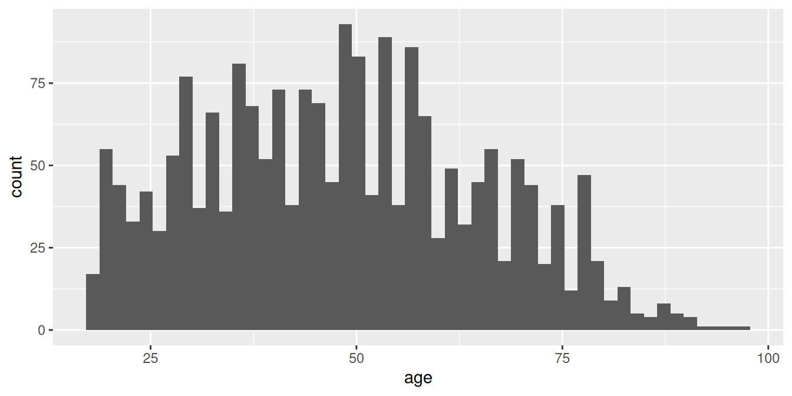
Avertissement
Le nombre d’intervalles change ce que vous voyez. Identifiez l’intervalle qui correspond à ce que vous étudiez, ou essayez-en toujours plusieurs avant de conclure quoi que ce soit sur la forme d’une distribution.
Une variable qualitative : le diagramme en barres
ggplot(d) + geom_bar(aes(x = qualif))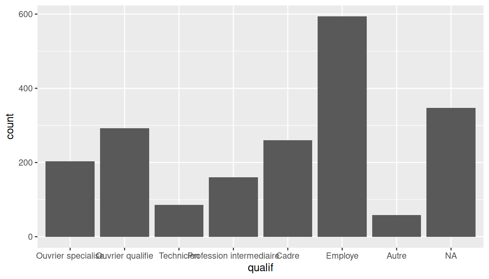
Astuce
geom_bar() compte lui-même les effectifs : c’est l’équivalent graphique du count() de la séance dernière. Les valeurs manquantes apparaissent comme une barre.
Étiquettes illisibles
Quand les modalités sont longues, on inverse les axes en passant la variable en y :
ggplot(d) + geom_bar(aes(y = qualif))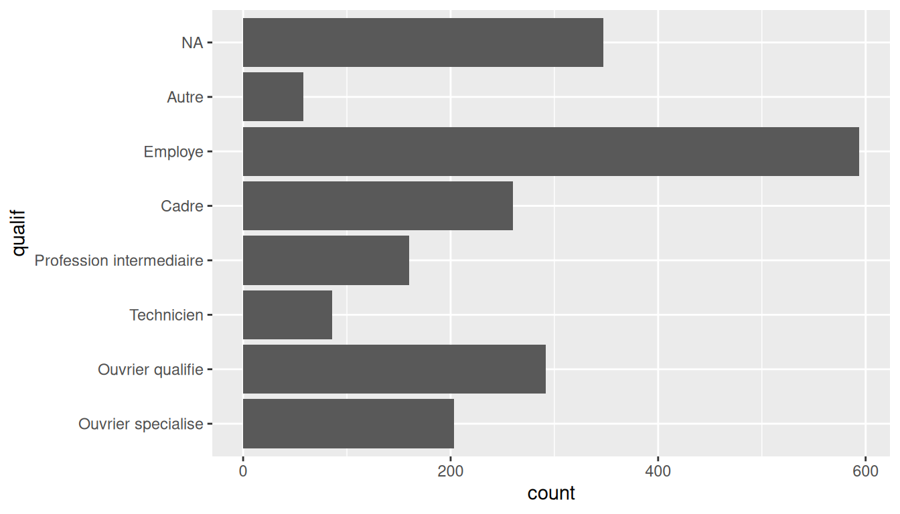
Exercice
- Représentez la distribution du nombre de frères et sœurs (
freres.soeurs). - Faites un diagramme en barres de la variable
relig. Comparez avec lecount()de la séance dernière. - Représentez la distribution de l’âge avec 5, puis 20, puis 100 intervalles. Que voyez-vous apparaître, et que voyez-vous disparaître ?
20 minutes. La question 3 est la plus importante : elle installe l’idée qu’un graphique est un choix, pas une donnée brute.
Croiser deux variables
Nuage de points
Pour deux variables quantitatives, on utilise geom_point(), qui demande une position en x et une en y :
ggplot(d) + geom_point(aes(x = age, y = heures.tv))Warning: Removed 5 rows containing missing values or values outside the scale range
(`geom_point()`).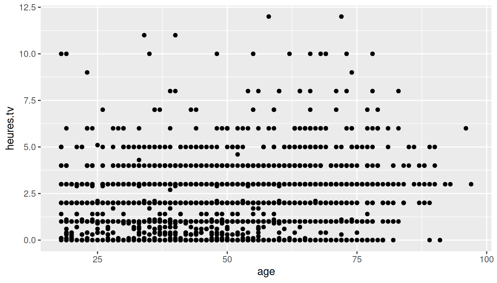
Le problème des points superposés
Il y a 2000 observations et beaucoup se superposent exactement : impossible de savoir où se concentrent les enquêtés.
La transparence (alpha) et un léger décalage aléatoire (geom_jitter) rendent la densité visible :
ggplot(d) + geom_jitter(aes(x = age, y = heures.tv), alpha = 0.15)Warning: Removed 5 rows containing missing values or values outside the scale range
(`geom_point()`).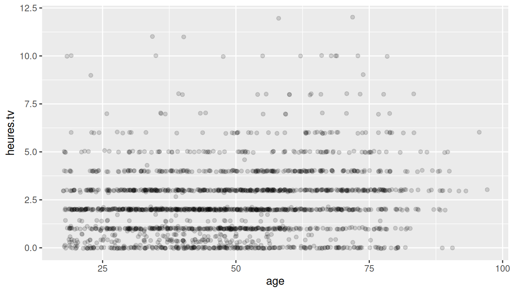
Important
Le premier graphique n’était pas faux, il était illisible. Un graphique peut cacher l’information aussi bien qu’un tableau.
Quantitative selon qualitative : la boîte à moustaches
ggplot(d) + geom_boxplot(aes(x = sexe, y = heures.tv))Warning: Removed 5 rows containing non-finite outside the scale range
(`stat_boxplot()`).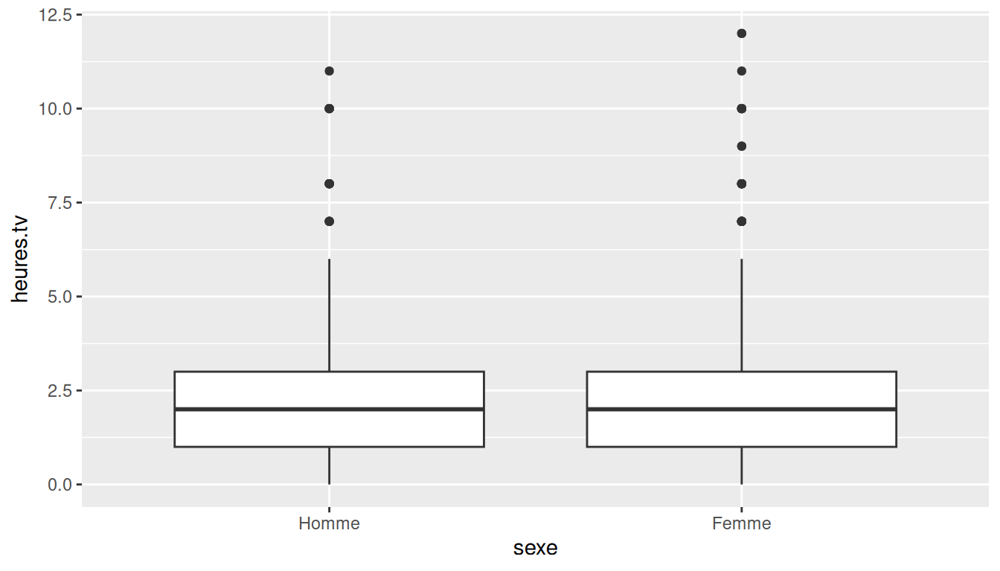
Lire une boîte à moustaches
- Le trait épais au milieu est la médiane.
- La boîte va du premier au troisième quartile : elle contient la moitié centrale des observations.
- Les moustaches s’étendent jusqu’aux valeurs extrêmes, dans la limite d’une fois et demie la hauteur de la boîte.
- Les points au-delà sont affichés individuellement : ce sont les valeurs atypiques.
Ce sont exactement les quartiles calculés la séance dernière avec quantile(). La boîte est leur traduction visuelle.
Comparer plusieurs groupes
ggplot(d) + geom_boxplot(aes(x = heures.tv, y = qualif))Warning: Removed 5 rows containing non-finite outside the scale range
(`stat_boxplot()`).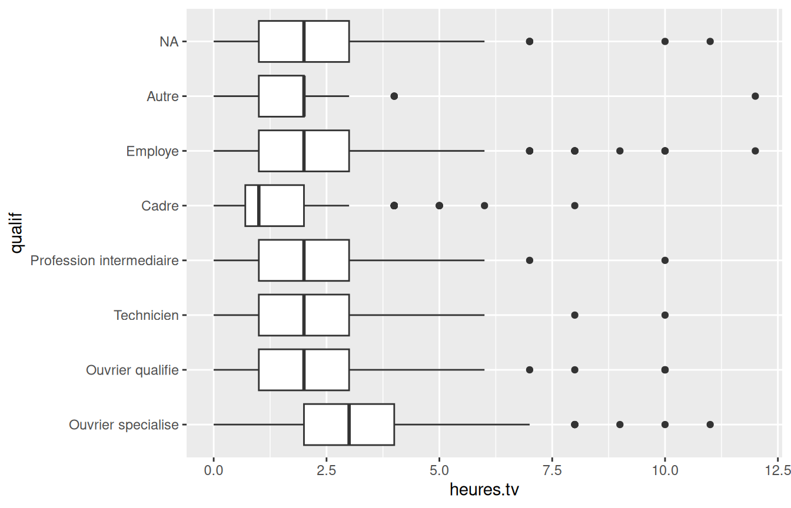
Astuce
Comparez avec le tableau group_by(qualif) |> summarise(...) de la séance dernière : même information, mais la dispersion de chaque groupe devient visible.
Mappages
Relier un attribut à une variable
Un mappage est une mise en relation entre un attribut graphique (position, couleur, taille, transparence) et une variable du tableau.
Tous les mappages se déclarent dans aes().
Couleur
ggplot(d) +
geom_jitter(aes(x = age, y = heures.tv, color = sexe), alpha = 0.3)Warning: Removed 5 rows containing missing values or values outside the scale range
(`geom_point()`).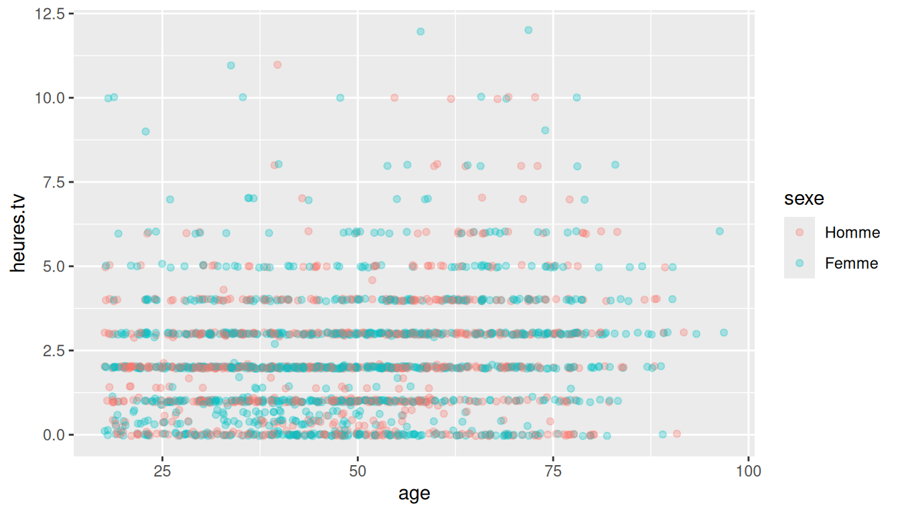
Taille et transparence
ggplot(d) +
geom_jitter(
aes(x = age, y = heures.tv, color = sexe, size = freres.soeurs),
alpha = 0.3
)Warning: Removed 5 rows containing missing values or values outside the scale range
(`geom_point()`).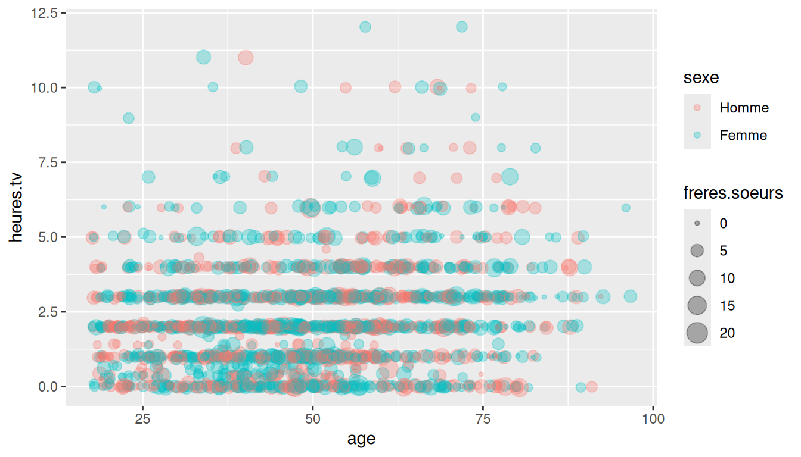
Chaque geom possède sa propre liste de mappages possibles.
aes() ou pas aes() ?
Parfois on veut fixer un attribut sans le relier à une variable : tous les points en rouge, par exemple. On utilise le même argument color, mais à l’extérieur de aes().
ggplot(d) +
geom_jitter(
aes(x = age, y = heures.tv),
color = "darkred", alpha = 0.2
)Warning: Removed 5 rows containing missing values or values outside the scale range
(`geom_point()`).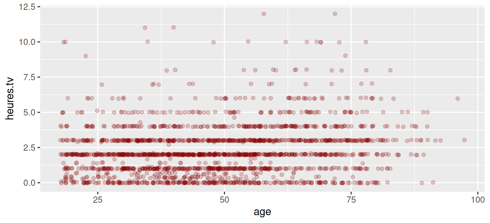
ggplot(d) +
geom_jitter(
aes(x = age, y = heures.tv,
color = sexe),
alpha = 0.2
)Warning: Removed 5 rows containing missing values or values outside the scale range
(`geom_point()`).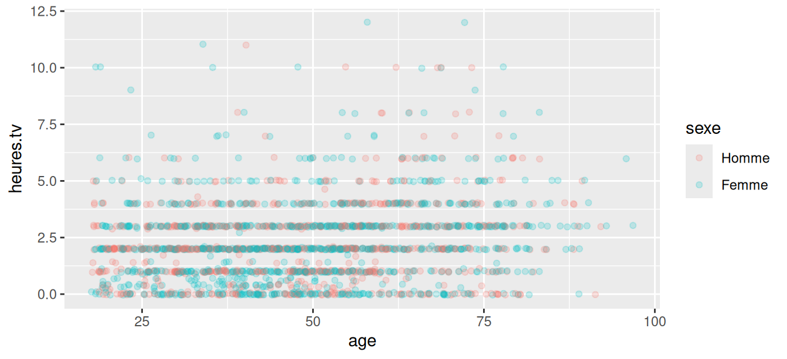
La règle
Important
Si l’attribut dépend d’une variable, il va dans aes().
Si l’attribut est le même pour tous les points, il va en dehors de aes().
On peut mélanger les deux. Ici la taille dépend d’une variable, la couleur est constante :
ggplot(d) +
geom_jitter(aes(x = age, y = heures.tv, size = freres.soeurs), color = "royalblue", alpha = 0.2)Warning: Removed 5 rows containing missing values or values outside the scale range
(`geom_point()`).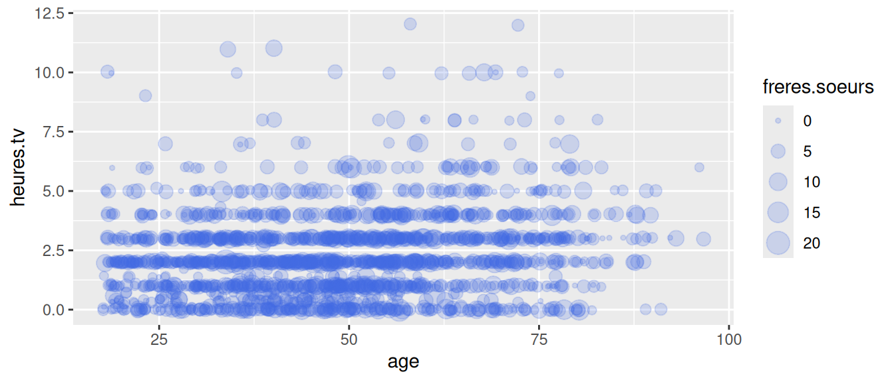
Une erreur classique
ggplot(d) + geom_jitter(aes(x = age, y = heures.tv, color = "darkred"))Warning: Removed 5 rows containing missing values or values outside the scale range
(`geom_point()`).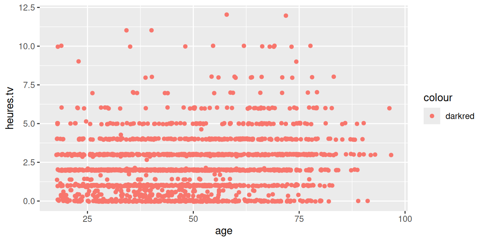
color est ici dans aes() : R comprend qu’il faut colorer selon une variable qui vaudrait « darkred » pour tout le monde. Il crée donc un groupe unique, lui attribue sa première couleur de palette, et ajoute une légende absurde. Aucun message d’erreur.
Superposer et découper
Plusieurs géométries
On peut ajouter plusieurs geom avec +. Pour éviter de répéter les mappages, on les déclare dans ggplot() : ils sont hérités par toutes les géométries.
ggplot(d, aes(x = sexe, y = heures.tv)) +
geom_boxplot() +
geom_jitter(color = "red", alpha = 0.1)Warning: Removed 5 rows containing non-finite outside the scale range
(`stat_boxplot()`).Warning: Removed 5 rows containing missing values or values outside the scale range
(`geom_point()`).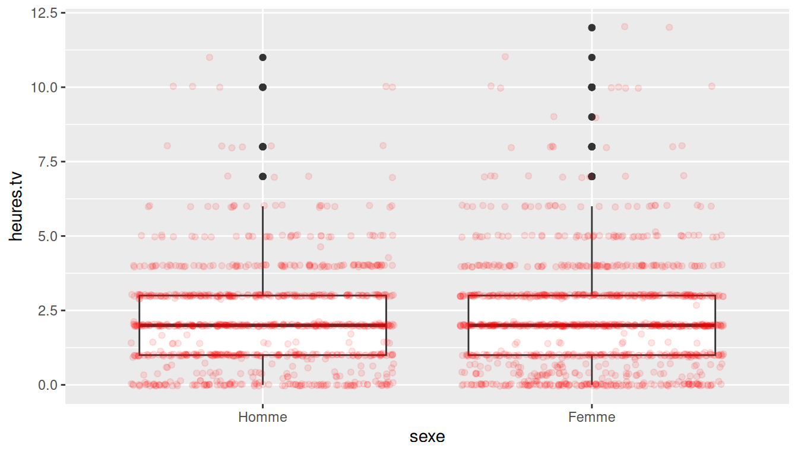
Ajouter une tendance
ggplot(d, aes(x = age, y = heures.tv)) +
geom_jitter(alpha = 0.15) +
geom_smooth(method = "lm")`geom_smooth()` using formula = 'y ~ x'Warning: Removed 5 rows containing non-finite outside the scale range
(`stat_smooth()`).Warning: Removed 5 rows containing missing values or values outside the scale range
(`geom_point()`).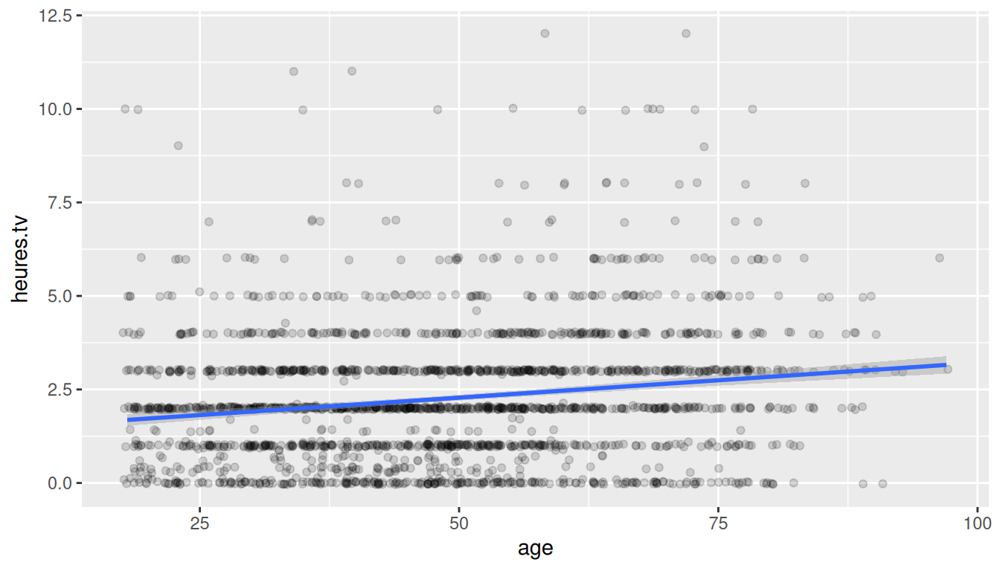
Note
geom_smooth(method = "lm") ajoute une droite de régression linéaire. Vous la retrouverez en économétrie ; ici, elle sert seulement à visualiser une tendance.
Découper en sous-graphiques
facet_wrap() répète le même graphique pour chaque modalité d’une variable :
ggplot(d, aes(x = age, y = heures.tv)) +
geom_jitter(alpha = 0.2) +
facet_wrap(~ sexe)Warning: Removed 5 rows containing missing values or values outside the scale range
(`geom_point()`).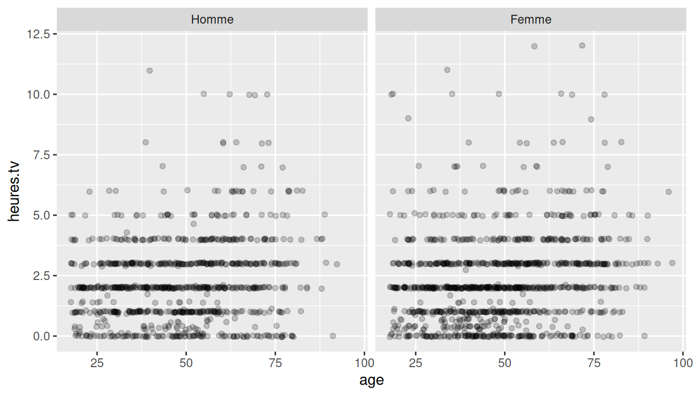
C’est le pendant graphique du group_by() de la séance dernière.
Quand une commande devient longue, répartissez-la sur plusieurs lignes en plaçant le + en fin de ligne, pour que R comprenne que la commande continue.
Mise en forme
Les échelles
Les scales modifient la manière dont un attribut est relié aux valeurs d’une variable, et l’affichage de la légende correspondante. Elles s’ajoutent avec + et prennent la forme scale_<attribut>_<type>.
ggplot(d) +
geom_jitter(aes(x = age, y = heures.tv), alpha = 0.15) +
scale_x_continuous(limits = c(18, 100)) +
scale_y_continuous(limits = c(0, 12))Warning: Removed 125 rows containing missing values or values outside the scale range
(`geom_point()`).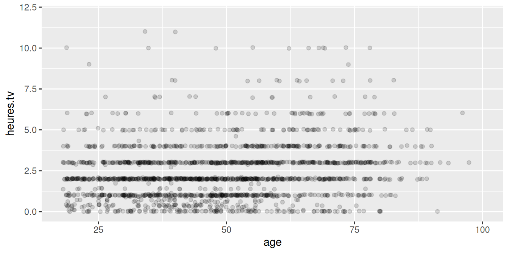
Titres et étiquettes
labs() règle tous les textes du graphique en une seule fois :
ggplot(d) +
geom_jitter(aes(x = age, y = heures.tv, color = sexe), alpha = 0.3) +
labs(
title = "Télévision et âge",
subtitle = "Enquête Histoires de vie, INSEE, 2003",
x = "Âge (années)",
y = "Heures de télévision par jour",
color = "Sexe"
)Warning: Removed 5 rows containing missing values or values outside the scale range
(`geom_point()`).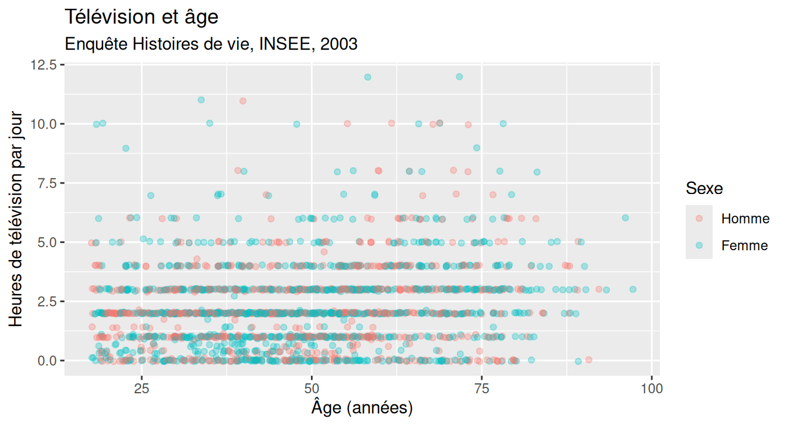
Thèmes
ggplot(d) +
geom_bar(aes(y = qualif)) +
labs(x = "Effectif", y = NULL) +
theme_minimal()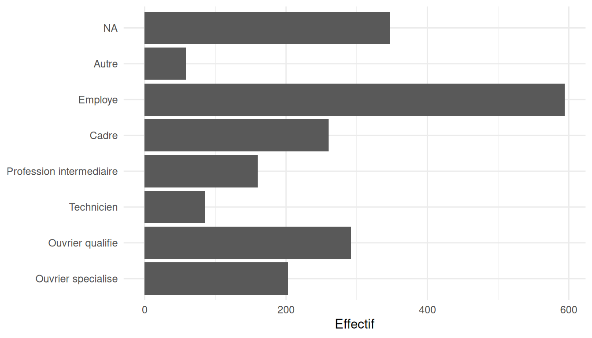
Essayez aussi theme_bw(), theme_classic(), theme_light().
Un graphique lisible
- Des axes nommés, en français, avec l’unité.
heures.tvn’est pas un titre d’axe. - La source, en sous-titre ou en légende.
- Pas de décoration inutile. Les couleurs doivent porter de l’information, sinon elles distraient.
- Le nombre d’observations représentées, surtout si des valeurs manquantes ont été écartées.
Enregistrer un graphique
ggsave("tv_age.png", width = 8, height = 5)ggsave() enregistre le dernier graphique affiché, dans le dossier de travail. Le format est déduit de l’extension du fichier.
À vous
Exercices
Dans un script commenté :
- Représentez la distribution de l’âge selon le sexe, avec des boîtes à moustaches.
- Faites un diagramme en barres du niveau d’études (
nivetud), lisible. - Le nombre d’heures de télévision diffère-t-il selon que l’on pratique un sport ? Représentez-le, puis comparez avec le tableau correspondant de la séance dernière.
- Reprenez le nuage de points âge / heures de télévision, découpez-le par catégorie socio-professionnelle avec
facet_wrap(), et donnez-lui un titre et des axes nommés.
Astuce
Pour chaque graphique, écrivez en commentaire ce que vous y lisez. Un graphique sans lecture ne sert à rien.
Exercice swirl
library(swirl)
swirl()Faites la leçon Representations_graphiques.
Note
En option, pour pratiquer davantage : la leçon facultative Exercice_5 reprend nuage de points, boîte à moustaches et diagramme en bâtons. Voir LECONS_OPTIONNELLES.md.
Pour la prochaine séance
La séance 5 est un projet : une analyse complète, de votre choix, sur hdv2003.
- Choisissez deux ou trois questions auxquelles vous voulez répondre.
- Écrivez-les avant de coder.
- Apportez-les à la séance prochaine.
Ressources
L’antisèche ggplot2 résume l’essentiel en deux pages. Elle est aussi accessible depuis RStudio : Help > Cheatsheets > Data visualization with ggplot2.
La documentation officielle donne la liste complète des géométries, avec un exemple pour chacune.
Le chapitre Data visualisation de R for Data Science est une bonne introduction complémentaire, en anglais.
Les références
Barnier, Julien, et Mayeul Kauffmann. 2023. "Introduction à R et au tydiverse". Version v2023-05-02. Zenodo, released. https://doi.org/10.5281/zenodo.6382598.